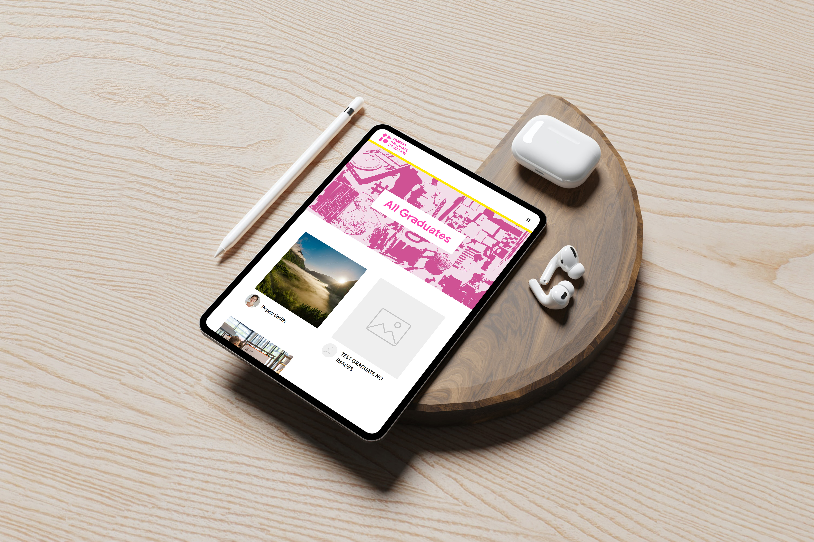

DEBRIEF Graduate Exhibition
Project Overview
About the brand/event/thing. The DEBRIEF Exhibition is the annual, end-of-year graduate exhibition for the School of Design students at Otago Polytechnic. This is a celebratory event where student work is displayed across four days, with the opening night including speeches, music and small nibbles. DEBRIEF attracts a wide target audience ranging from the students and staff themselves, industry professionals, family and friends, prospective students and clients of Otago Polytechnic, design enthusiats and the wider public. In the final 12 weeks of the degree the student designers work on one major project. For me, I chose to work alongside another student and design and develop our student exhibition.
Personality
3-5 key words. Vibrant
Risograph
student-focused

The approach
How did I try to achieve this goal? We wanted to bring a vibrant, optimistic energy into the branding and outcomes for the exhibition. This included bright colours, moving imagery and incorporating elements that would build excitement.